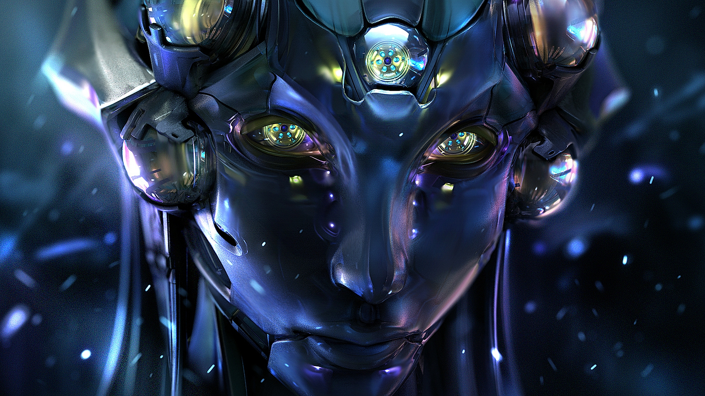

PROPERTIES OF ROBOTS
mechanical bots

DESIGN

FUNCTION

AUTONOMY
TYPES OF ROBOTS

Pre-Programmed
Pre-programmed robots operate in a controlled environment where they do simple, monotonous tasks. An example mechanical arm on automotive assembly line

Humanoid
Humanoid robots are robots that look like or mimic human behavior. These robots usually perform human-like activities (like running, jumping and carrying objects)

Autonomous
Autonomous robots operate independently of human operators. they are designed to carry out tasks in open environments that do not require human supervision

Teleoperated
Teleoperated robots are semi-autonomous bots that use a wireless network to enable human control from a safe distance

Augmenting
Augmenting robots, also known as VR robots, either enhance current human capabilities or replace the capabilities a human may have lost